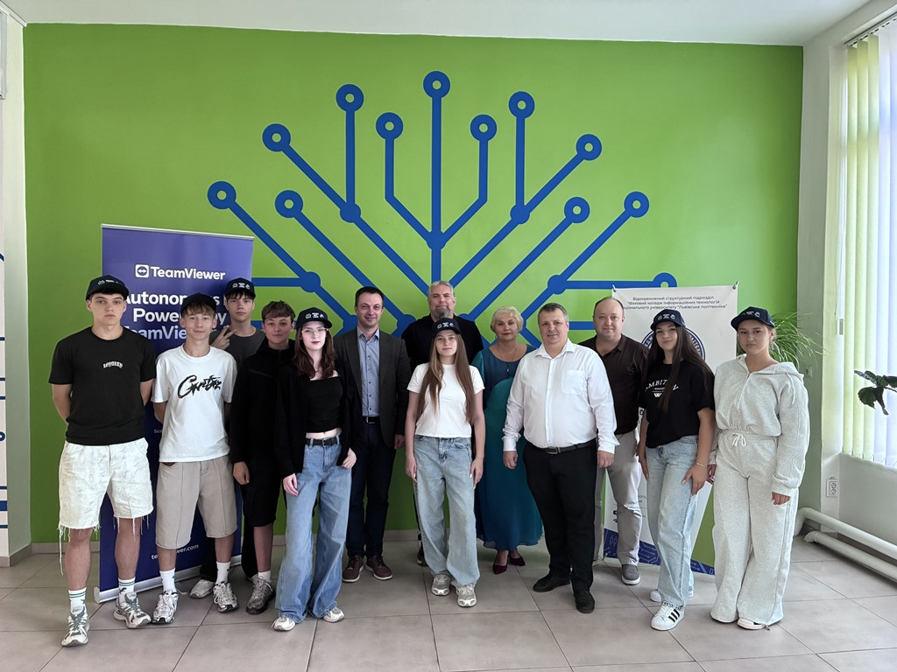
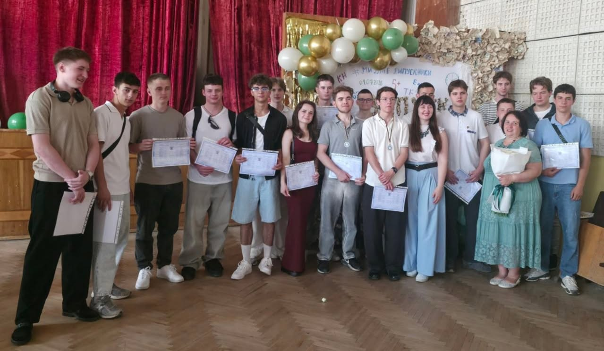
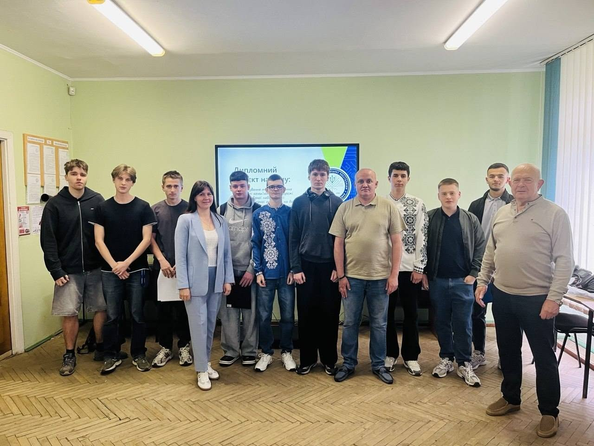
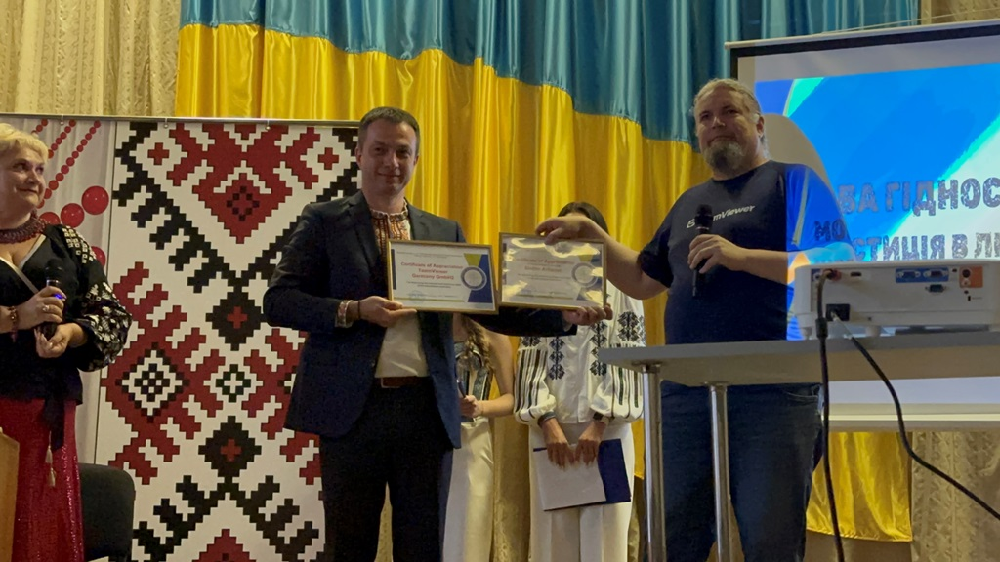

Фаховий коледж інформаційних технологій
Готуємо фахових молодших бакалаврів з комп'ютерних наук, комп'ютерної інженерії, телекомунікацій, мереж та Інтернету речей. Вступ на основі 9 та 11 класів.
Від технікуму зв'язку до ІТ коледжу Політехніки
27 травня 1945 року було організовано Львівський електротехнікум зв'язку — так розпочалася історія нашого закладу.
Перший набір складав 111 студентів, які навчалися міжміського телефонного зв'язку та радіофікації. Сьогодні коледж є відокремленим структурним підрозділом Національного університету «Львівська політехніка» і готує фахівців з програмування, комп'ютерної інженерії, телекомунікацій та мережних технологій.
Навчальний корпус і лабораторії розташовані на вулиці Володимира Великого. Студенти навчаються у 14 спеціалізованих лабораторіях і майстернях, а також у Мережевій академії Cisco.



рік заснування закладу
освітньо-професійних програм у галузі ІТ та зв'язку
роки навчання після 9 / 11 класу
комп'ютерів і ноутбуків від TeamViewer у 2026 році
Спеціальності коледжу
Освітньо-професійний ступінь фахового молодшого бакалавра, денна форма навчання.
Комп'ютерні науки
Розробка математичного, інформаційного та програмного забезпечення, адміністрування баз даних і систем.
- Алгоритмізація та об'єктно-орієнтоване програмування
- WEB-технології та WEB-дизайн
- Організація баз даних та знань, тестування ПЗ
Комп'ютерна інженерія
Апаратне забезпечення, комп'ютерні системи та їх обслуговування.
- Комп'ютерна електроніка та архітектура комп'ютерів
- Периферійні пристрої
- Мікроконтролери
Телекомунікації та комп'ютерні технології
Системи та мережі зв'язку, телекомунікаційне обладнання.
Інжиніринг та програмування в інфокомунікаціях
Програмування інфокомунікаційних систем і сервісів.
Мережні технології та Інтернет речей
Комп'ютерні мережі, IoT-пристрої та їх налаштування.
Вступ до коледжу
Оберіть основу вступу — тут зібрані інструкції, строки та документи приймальної комісії.
Останні новини
Лабораторії та майстерні
Практичні заняття проходять у спеціалізованих лабораторіях, оснащених сучасним обладнанням.
Як з нами зв'язатися
- Адреса79053, м. Львів, вул. Володимира Великого, 12
- Телефон / факс(032) 263-15-66 · факс (032) 234-06-52
- Загальна поштаinfo@itcollege.lviv.ua
- Питання вступуadmission@itcollege.lviv.ua
- Комунікація та співпрацяcom@itcollege.lviv.ua